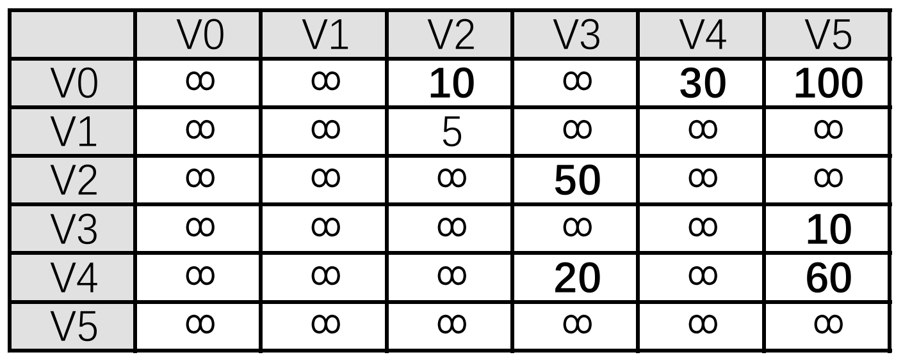
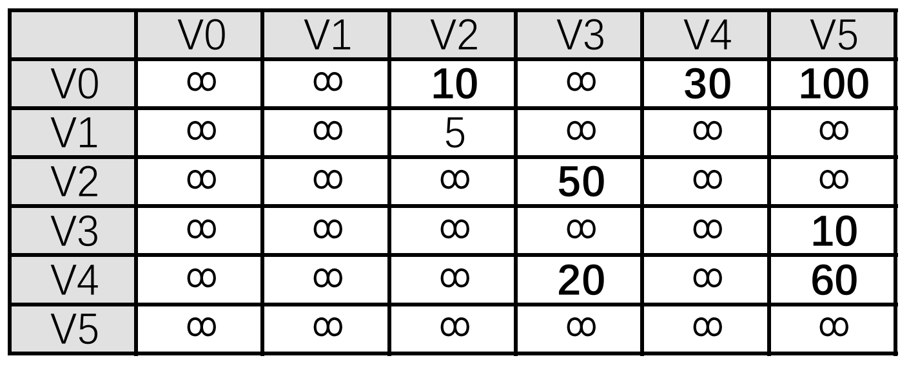

1
2
3
4
5
6
7
8
9
10
11
12
13
14
15
16
17
18
19
20
21
22
23
24
25
26
27
28
29
30
31
32
33
34
35
36
37
38
39
40
41
42
43
44
45
46
47
48
49
50
51
52
53
54
55
56
57
58
59
60
61
62
63
64
65
66
67
68
69
70
71
72
73
|
def dijkstra(graph,start_index,max):
# 初始化cost,path,visited数组
# cost数组：cost[i]表示从start_index到i号元素的最小花费
cost=[max]*len(graph)
cost[start_index] = 0
# path数组：path[i]表示从start_index到i号元素的最短路径中，到达i号元素的前一个元素索引为path[i]（即想要以最小花费到达i号元素，需要通过path[i]号元素）
path = [-1] * len(graph)
path[start_index] = start_index
# visited数组：visited[i]表示i号元素是否被访问过（已经找到了最优路径）
visited=[0]*len(graph)
visited[start_index]=1
for i in range(len(graph)):
if(visited[i]==0):
cost[i]=graph[start_index][i]
# path[i]=-1表示不可达
path[i]=(start_index if(cost[i]<max) else -1)
# 主体代码
for i in range(1,len(graph)):
cur_index=-1
min_cost=max
# 找到下一步代价最小的节点
for j in range(len(graph)):
if(visited[j]==0):
if(cost[j]<min_cost):
min_cost=cost[j]
cur_index=j
# 如果没有找到可访问的节点，退出循环
if cur_index==-1:
break
# 标记下一步代价最小的节点为已访问的节点
visited[cur_index]=1
# 依据找到的下一步代价最小的节点cur_index更新其附近一圈的节点数据
for k in range(len(graph)):
if(visited[k]==0):
if(cost[cur_index]+graph[cur_index][k]<cost[k]):
cost[k]=cost[cur_index]+graph[cur_index][k]
path[k]=cur_index
return path
def get_path(path, start_index, target_index):
if path[target_index] == -1:
return "No path exists"
path_list = []
while target_index != start_index:
path_list.append(target_index)
target_index = path[target_index]
path_list.append(start_index)
path_list.reverse()
return path_list
if __name__=="__main__":
max=2**31-1
graph=[
[max, max, 10, max, 30, 100],
[max, max, 5, max, max, max],
[max, max, max, 50, max, max],
[max, max, max, max, max, 10],
[max, max, max, 20, max, 60],
[max, max, max, max, max, max],
]
result=dijkstra(graph,0,max)
print("最短路径的前驱节点数组为：",result)
target_index = 5
path_to_target = get_path(result, 0, target_index)
print(f"从起点到目标节点 {target_index} 的路径为：", path_to_target)
|

 
